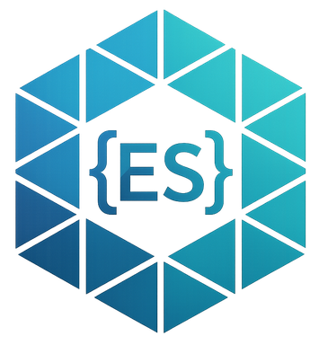

Native Federation brings the proven mental model of webpack Module Federation to the browser — built on ESM and Import Maps, independent of any specific build tool.
A future-proof approach to Micro Frontends that leverages web standards instead of being tied to a specific bundler.
Uses the same proven mental model from webpack Module Federation — hosts, remotes, and shared dependencies — making migration straightforward.
Leverages ESM and Import Maps — emerging web standards — making it independent of build tools like webpack, ensuring long-term compatibility.
The reference implementation uses the fast esbuild bundler and caches already-built shared dependencies for maximum performance.
Uses the same API and schematics as the Module Federation plugin. Switch by simply changing your import paths — no new concepts to learn.
Intelligently share libraries at runtime. Automatic version negotiation prevents duplicates while handling mismatches gracefully.
Successfully tested with both Angular CLI projects and Nx
workspaces. Use ng update for seamless upgrades.
Native Federation for Angular delegates directly to Angular's esbuild-based ApplicationBuilder, keeping in lockstep with Angular's own innovations.
Since 17.1, Native Federation uses Angular CLI's esbuild-based ApplicationBuilder and Dev Server to stay in sync with all performance improvements from the Angular team.
Full support for Angular's Server-Side Rendering and Incremental Hydration since version 18, enabling better performance and SEO.
Angular I18N support since 19.0.13, with localization improvements
in 20.0.6 including the ignoreUnusedDeps feature for
simplified locale loading.
Native Federation follows Angular's version numbers for easy compatibility. Use the matching version for your Angular project.
| Angular Version | Native Federation |
|---|---|
| Angular 21.x | 21.x |
| Angular 20.1.x | 20.1.x |
| Angular 20.0.x | 20.0.x |
| Angular 19.x | 19.x |
| Angular 18.2.x | 18.2.x |
| Angular 18.1.x | 18.1.x |
| Angular 18.0.x | 18.x |
| Angular 17.1 | 17.1.x |
| Angular 17.x | 17.x |
| Angular 16.2.x | 16.2.x |
| Angular 16.1.x | 16.1.x |
Native Federation builds on the work and ideas of many talented people across the JavaScript ecosystem.
Initially conceived the idea of Module Federation and its successful mental model.
Helped make Module Federation a first-class citizen of webpack.
Seamlessly integrated webpack Module Federation into Nx, helping spread the word.
Alan Agius, Charles Lyding, and the team for their work on the esbuild builder for Angular.
Contributed to early discussions around Module Federation and its evolution.
Contributed to Module Federation efforts and brought in valuable feedback.